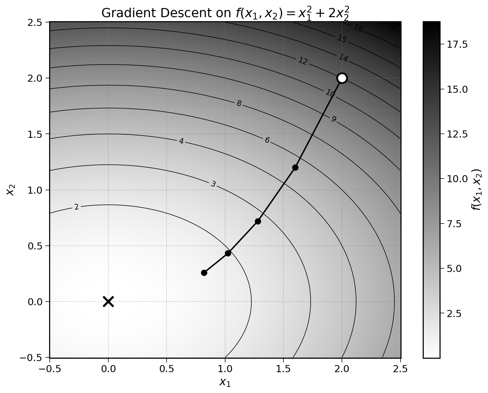

15 Gradient Descent for Multiple Inputs
With vectors and gradients, we can now extend gradient descent to functions with multiple inputs. This will allow us to minimise the mean squared error of a linear regression with regards to the slope and intercept. If we manage to minimise the MSE, we can find the best fitting line for any dataset.
15.1 From One Input to Many
Do you remember the steps involved in the gradient descent algorithm with a single parameter?
- Start with a random guess: e.g., \(x_0 = 2\)
- Compute the derivative of the function at this point: \(f'(x_0)\)
- Update the value of \(x\) by a small step opposite to \(f'(x)\):
\[ x_{t+1} = x_t - \text{learning rate} \times f'(x_t) \]
- Continue until the algorithm converges and there are no more changes to \(x\): \(x_{t+1} \approx x_t\)
This can be adapted to functions with multiple inputs by using the gradient vector instead of the derivative. As a reminder, the gradient vector is the ordered list of partial derivatives of a function with multiple inputs, introduced in a previous chapter.
Let’s consider the function:
\[ f(x_1, x_2) = x_1^2 + 2x_2^2 \]
Its gradient vector is:
\[ \nabla f(x_1, x_2) = \left( \frac{\partial f}{\partial x_1}, \frac{\partial f}{\partial x_2} \right) = (2x_1, \; 4x_2) \]
Using the notation \(\mathbf{x} = (x_1, x_2)\) for the combination of inputs, the four steps of gradient descent become:
- Start with a random guess: e.g., \(\mathbf{x}_0 = (2, 2)\)
- Compute the gradient of the function at this point: \(\nabla f(\mathbf{x}_0)\)
- Update \(\mathbf{x}\) by a small step opposite to the gradient: \[ \mathbf{x}_{t+1} = \mathbf{x}_t - \text{learning rate} \times \nabla f(\mathbf{x}_t) \]
- Continue until the algorithm converges: \(\mathbf{x}_{t+1} \approx \mathbf{x}_t\)
This is the general formulation. Notice that with the gradient vector, we can easily extend the algorithm to handle collections of inputs. Let’s try it step by step.
15.2 Example
Start with a random guess \(\mathbf{x}_0 = (2, 2)\). This vector is a list of inputs: \(x_1 = 2\) and \(x_2 = 2\). As a reminder, \(f\) is:
\[ f(x_1, x_2) = x_1^2 + 2x_2^2 \]
and the gradient is:
\[ \nabla f(x_1, x_2) = (2x_1, \; 4x_2) \]
Step 1: Compute the gradient of \(f\) at \(\mathbf{x}_0 = (2, 2)\):
\[ \nabla f(2, 2) = (2 \times 2, \; 4 \times 2) = (4, 8) \]
Then, update \(\mathbf{x}\) using the gradient descent update rule. This update involves two operations studied in the previous chapter: scalar multiplication and vector subtraction.
Using a learning rate of \(0.1\):
\[ \mathbf{x}_1 = \mathbf{x}_0 - 0.1 \times \nabla f(\mathbf{x}_0) = (2, 2) - 0.1 \times (4, 8) = (2 - 0.4, \; 2 - 0.8) = (1.6, 1.2) \]
Step 2: Compute the gradient at \(\mathbf{x}_1 = (1.6, 1.2)\):
\[ \nabla f(1.6, 1.2) = (2 \times 1.6, \; 4 \times 1.2) = (3.2, 4.8) \]
and update \(\mathbf{x}\):
\[ \mathbf{x}_2 = (1.6, 1.2) - 0.1 \times (3.2, 4.8) = (1.6 - 0.3, \; 1.2 - 0.5) = (1.3, 0.7) \]
Step 3: Compute the gradient at \(\mathbf{x}_2 = (1.3, 0.7)\):
\[ \nabla f(1.3, 0.7) = (2 \times 1.3, \; 4 \times 0.7) = (2.6, 2.8) \]
and update \(\mathbf{x}\):
\[ \mathbf{x}_3 = (1.3, 0.7) - 0.1 \times (2.6, 2.8) = (1.3 - 0.3, \; 0.7 - 0.3) = (1.0, 0.4) \]
Summarising these steps:
| Step | \(\mathbf{x}\) | \(\nabla f(\mathbf{x})\) | \(\mathbf{x}_{\text{new}}\) |
|---|---|---|---|
| 1 | \((2, 2)\) | \((4, 8)\) | \((1.6, 1.2)\) |
| 2 | \((1.6, 1.2)\) | \((3.2, 4.8)\) | \((1.3, 0.7)\) |
| 3 | \((1.3, 0.7)\) | \((2.6, 2.8)\) | \((1.0, 0.4)\) |
| 4 | \((1.0, 0.4)\) | \((2.0, 1.6)\) | \((0.8, 0.2)\) |
After a few more iterations, the algorithm will converge to the minimum of the function at \(\mathbf{x} = (0, 0)\). You may notice that \(x_2\) decreases faster than \(x_1\). This is because the partial derivative with regards to \(x_2\) is larger (the coefficient \(2\) in front of \(x_2^2\) makes the function steeper in the \(x_2\) direction).

Exercise 15.1 Minimise the function \(f(x_1, x_2) = 2x_1^2 + x_2^2\) using gradient descent, starting from \(\mathbf{x}_0 = (3, 2)\) with a learning rate of \(0.1\).
- Compute the gradient \(\nabla f(x_1, x_2)\).
- Run three steps of gradient descent and fill in the table:
| Step | \(\mathbf{x}\) | \(\nabla f(\mathbf{x})\) | \(\mathbf{x}_{\text{new}}\) |
|---|---|---|---|
| 1 | \((3, 2)\) | ||
| 2 | |||
| 3 |
- What value is \(\mathbf{x}\) converging to?
15.3 Generalising to Any Number of Inputs
The examples above minimised a function of two inputs. Using vectors and gradients, we can minimise a function with any number of inputs. Let’s consider:
\[ f(x_1, x_2, x_3) = x_1^2 + 2x_2^2 + 3x_3^2 \]
The combination of inputs can be noted as \(\mathbf{x} = (x_1, x_2, x_3)\). The gradient vector becomes:
\[ \nabla f(x_1, x_2, x_3) = (2x_1, \; 4x_2, \; 6x_3) \]
The same four steps can be followed to minimise this function:
- Start with a random guess: e.g., \(\mathbf{x}_0 = (-2, -2, -3)\)
- Compute the gradient: \(\nabla f(\mathbf{x}_0)\)
- Update: \(\mathbf{x}_{t+1} = \mathbf{x}_t - \text{learning rate} \times \nabla f(\mathbf{x}_t)\)
- Continue until convergence: \(\mathbf{x}_{t+1} \approx \mathbf{x}_t\)
Nothing has changed from the two-input case. Whether the function has 2, 3, or 100 inputs, the algorithm remains the same: compute the gradient and take a small step in the opposite direction.
Exercise 15.2 Minimise the function \(f(x_1, x_2, x_3) = x_1^2 + 2x_2^2 + 3x_3^2\) using gradient descent, starting from \(\mathbf{x}_0 = (-2, -2, -3)\) with a learning rate of \(0.1\). Run three steps and fill in the table below:
| Step | \(\mathbf{x}\) | \(\nabla f(\mathbf{x})\) | \(\mathbf{x}_{\text{new}}\) |
|---|---|---|---|
| 1 | \((-2, -2, -3)\) | ||
| 2 | |||
| 3 |
This algorithm is at the centre of both linear regression fitting and the current AI revolution. Curious readers can read the following note to understand the parallels between the two.
Large Language Models (LLMs) use gradient descent to minimise functions with billions of parameters. These models are trained to predict the next word or part of a word (called a token). The training algorithm aims to find the parameters (like slope and intercept for linear regression) that minimise the prediction loss, i.e., how often the model predicts the wrong next word.
15.4 Final Thoughts
This was the last building block required to fit the slope and intercept of a linear regression. The next chapter will put it all together.
15.5 Solutions
Solution 15.1. Exercise 15.1
The gradient of \(f(x_1, x_2) = 2x_1^2 + x_2^2\) is:
\[ \nabla f(x_1, x_2) = (4x_1, \; 2x_2) \]
Step 1: \(\mathbf{x}_0 = (3, 2)\)
\[ \nabla f(3, 2) = (12, 4) \]
\[ \mathbf{x}_1 = (3, 2) - 0.1 \times (12, 4) = (3 - 1.2, \; 2 - 0.4) = (1.8, 1.6) \]
Step 2: \(\mathbf{x}_1 = (1.8, 1.6)\)
\[ \nabla f(1.8, 1.6) = (7.2, 3.2) \]
\[ \mathbf{x}_2 = (1.8, 1.6) - 0.1 \times (7.2, 3.2) = (1.8 - 0.7, \; 1.6 - 0.3) = (1.1, 1.3) \]
Step 3: \(\mathbf{x}_2 = (1.1, 1.3)\)
\[ \nabla f(1.1, 1.3) = (4.4, 2.6) \]
\[ \mathbf{x}_3 = (1.1, 1.3) - 0.1 \times (4.4, 2.6) = (1.1 - 0.4, \; 1.3 - 0.3) = (0.7, 1.0) \]
| Step | \(\mathbf{x}\) | \(\nabla f(\mathbf{x})\) | \(\mathbf{x}_{\text{new}}\) |
|---|---|---|---|
| 1 | \((3, 2)\) | \((12, 4)\) | \((1.8, 1.6)\) |
| 2 | \((1.8, 1.6)\) | \((7.2, 3.2)\) | \((1.1, 1.3)\) |
| 3 | \((1.1, 1.3)\) | \((4.4, 2.6)\) | \((0.7, 1.0)\) |
The algorithm converges to \(\mathbf{x} = (0, 0)\), the minimum of the function.
Solution 15.2. Exercise 15.2
The gradient of \(f(x_1, x_2, x_3) = x_1^2 + 2x_2^2 + 3x_3^2\) is:
\[ \nabla f(x_1, x_2, x_3) = (2x_1, \; 4x_2, \; 6x_3) \]
Step 1: \(\mathbf{x}_0 = (-2, -2, -3)\)
\[ \nabla f(-2, -2, -3) = (-4, -8, -18) \]
\[ \mathbf{x}_1 = (-2, -2, -3) - 0.1 \times (-4, -8, -18) = (-1.6, -1.2, -1.2) \]
Step 2: \(\mathbf{x}_1 = (-1.6, -1.2, -1.2)\)
\[ \nabla f(-1.6, -1.2, -1.2) = (-3.2, -4.8, -7.2) \]
\[ \mathbf{x}_2 = (-1.6, -1.2, -1.2) - 0.1 \times (-3.2, -4.8, -7.2) = (-1.3, -0.7, -0.5) \]
Step 3: \(\mathbf{x}_2 = (-1.3, -0.7, -0.5)\)
\[ \nabla f(-1.3, -0.7, -0.5) = (-2.6, -2.8, -3.0) \]
\[ \mathbf{x}_3 = (-1.3, -0.7, -0.5) - 0.1 \times (-2.6, -2.8, -3.0) = (-1.0, -0.4, -0.2) \]
| Step | \(\mathbf{x}\) | \(\nabla f(\mathbf{x})\) | \(\mathbf{x}_{\text{new}}\) |
|---|---|---|---|
| 1 | \((-2, -2, -3)\) | \((-4, -8, -18)\) | \((-1.6, -1.2, -1.2)\) |
| 2 | \((-1.6, -1.2, -1.2)\) | \((-3.2, -4.8, -7.2)\) | \((-1.3, -0.7, -0.5)\) |
| 3 | \((-1.3, -0.7, -0.5)\) | \((-2.6, -2.8, -3.0)\) | \((-1.0, -0.4, -0.2)\) |
The algorithm converges to \(\mathbf{x} = (0, 0, 0)\), the minimum of the function. Notice how \(x_3\) converges the fastest because it has the largest coefficient (\(3\)) and therefore the steepest gradient.